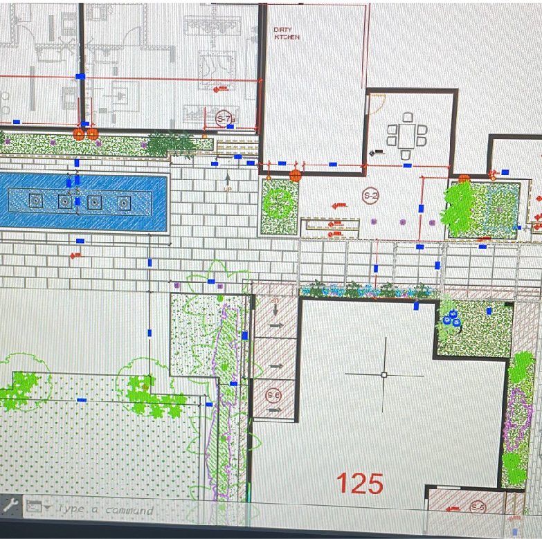
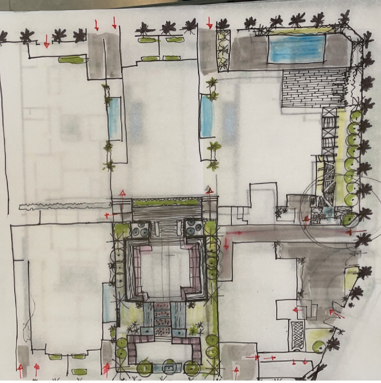

My Role: Concept development, techincal drawings, site planning, 3D modelling Tools Used: AutoCAD, SketchUp, Photoshop

Traditional option with arches and ornamentation, designed for symbolic presence.

Traditional option with arches and ornamentation, designed for symbolic presence.
This project demonstrates my interest in blending tradition with modernity, and designing sacred spaces that
are both timeless and rooted in context.